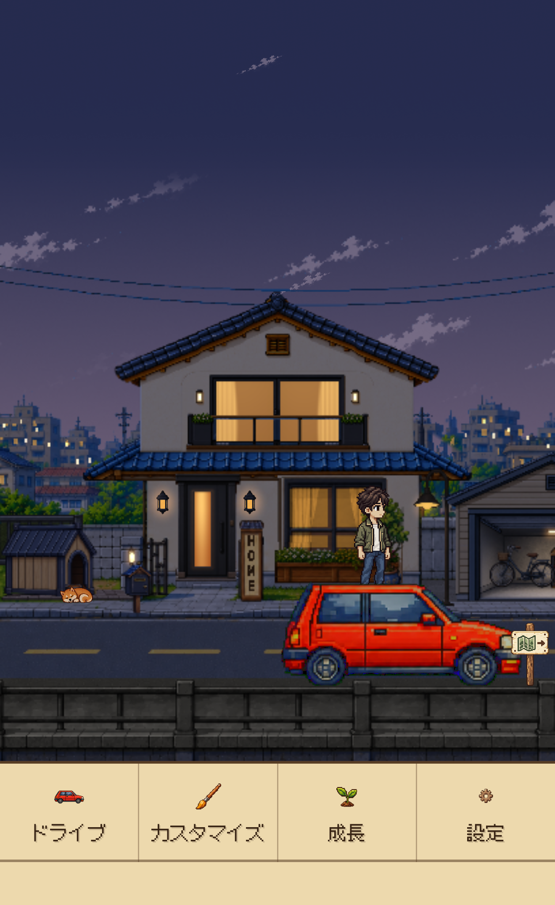
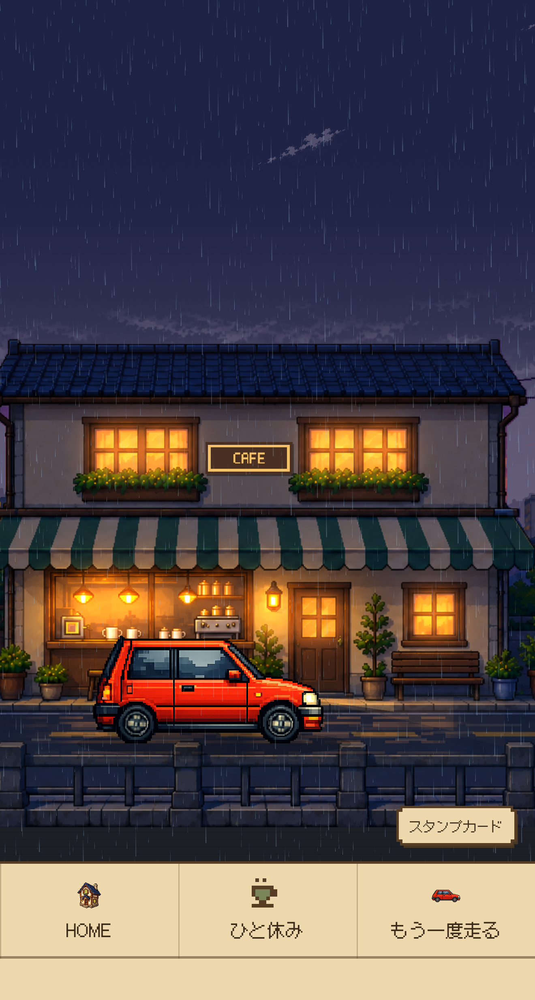

時間を設定 → 出発
Homeでドライブメニューを開き、集中時間を選んで出発します。
取材・レビュー・コンテンツ制作のための公式資料
Dayroadは、勉強・読書・作業に向き合う時間をつくりたい人のためのiPhone向け集中タイマーです。時間を決めて出発すると、車はドットの街を走り、ユーザーは自分のやることに集中。積み重ねた時間でスタンプを集め、自分でHomeを育てます。
対応端末と詳しい互換性はApp Storeでご確認ください。
やることはあるのに始められない、つい別のアプリを開いてしまう。そんな場面で、一回の集中時間を決め、勉強・読書・作業に向き合うきっかけをつくります。
Homeでドライブメニューを開き、集中時間を選んで出発します。

タイマーが進む間、車は自動で走ります。運転操作をせず、自分の作業に集中できます。

選んだアプリやカテゴリをブロックする任意の機能です。スクリーンタイムの許可が必要です。
車を操作する必要はありません。決めた時間は、自分のやることに向き合うだけ。横から眺める街並みと上から見るドライブ、晴れた昼と雨の夕方が、いつもの集中時間に彩りを添えます。
 01
01 02
02 03
03
ドットで描かれた街、流れる景色と音楽。集中するときも、ひと息つくときも、Dayroadが穏やかな背景になります。
集中を終え、累計25分ごとにスタンプを1個獲得。必要な数を集めたらHomeで自分で使い、次の段階を開放します。成長は自動では進みません。

実際の25分集中の完了画面。累計25分につきスタンプを1個獲得します。

次の段階に必要な数を貯め、自分で選んでHomeを開放します。

35段階まで育つHomeを、次の集中を始める小さな目標にする設計です。
集中 → ドライブ → 終了・スタンプ → 自分で開放 → Homeの成長 → 次の集中
集中した時間を目に見える変化として残し、次の成長を楽しみにもう一度集中を始める、小さなきっかけをつくる設計です。
累計25分の集中でスタンプを1個獲得。必要な数を貯めて使うと、Homeの次の段階を開放できます。小さな始まりから35段階まで、積み重ねた時間が目に見える変化として残ります。


Focus Lockは、スクリーンタイムの許可を得て、選んだアプリやカテゴリをブロックする任意の機能です。1.0ではWebサイトのブロックに対応していません。
ロック画面のライブアクティビティで残り時間を確認し、終了通知を受け取れます。対応端末や通知設定により動作は異なります。
Free Driveは時間制限なく、ずっと無料。集中の報酬は獲得できません。
日本の風景を舞台にしたFocus Driveを累計75分まで無料で体験できます。その後はFocus Drive Passの買い切りで継続できます。サブスクリプション、自動更新、体験終了後の自動課金はありません。
パスの対象は現在の日本を舞台にしたFocus Driveです。今後の追加エリアは別売りとなる場合があります。現地価格は購入前にApp Storeでご確認ください。
ZIP：画像・ブランド素材・3言語の報道用テキスト・使用案内。PDFと動画は個別にダウンロードできます。
アプリUIは実際の日本語画面です。風景は共通素材で、各画面は別々に撮影しています。WebPは画質を維持した可逆圧縮ファイルです。
晴れた昼の街WEBP ↓上から見るドライブWEBP ↓Home・0段階WEBP ↓Home・20段階WEBP ↓Home・35段階WEBP ↓カフェの風景WEBP ↓雨の夕方WEBP ↓集中時間の設定・出発WEBP ↓集中終了・スタンプWEBP ↓Home・自分で開放WEBP ↓Home・開放後WEBP ↓
HomeのメニューWEBP ↓
カフェのメニューWEBP ↓Focus Lockの設定WEBP ↓ 集中時間を選択WEBP ↓Focus Drive・タイマーWEBP ↓
集中時間を選択WEBP ↓Focus Drive・タイマーWEBP ↓勉強・読書・作業の時間をドット絵のドライブに変え、積み重ねた集中でHomeを育てるiPhone向け集中タイマー。
Dayroadを紹介する記事・レビュー・動画・ブログにご利用いただけます。製品名や画面を誤解させる改変はお控えください。クレジット推奨：Dayroad / Junho Kim。素材の単独再販売、他製品への転用、音楽の抽出は認められません。その他の用途はお問い合わせください。
Dayroadの開発者
 ワードマーク · SVG ↓
ワードマーク · SVG ↓